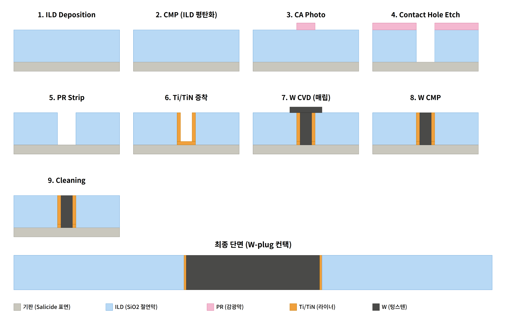
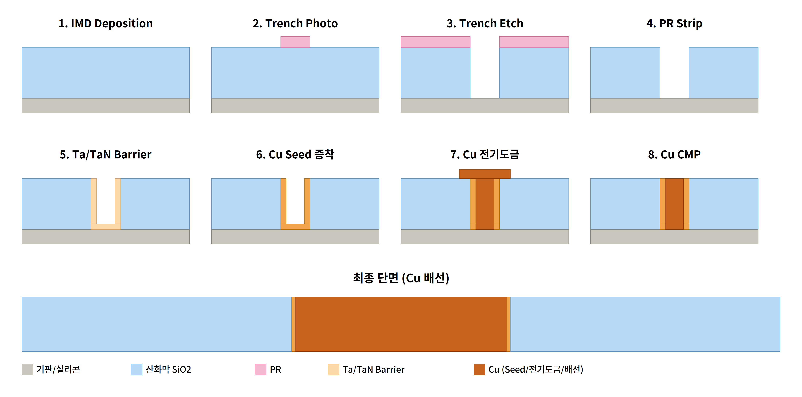
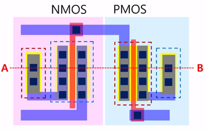

CMOS 공정설계
Contact(W-Plug)~M1(Cu Damascene) 통합 단면 구조 완성
CMOS 소자의 Contact부터 Metal 1 배선까지 후공정 설계를 다룬 프로젝트로, W-Plug (Contact) 9단계와 Cu Damascene(M1) 8단계 Process Flow를 설계해, STI부터 M1까지 이어지는 최종 CMOS 단면 구조를 완성했습니다.
개요
소자(Gate, Source/Drain)와 최상위 배선(Metal1) 사이를 전기적으로 연결하는 후공정 설계 과제입니다. 절연막을 관통해 소자와 배선을 잇는 Contact(W-Plug) 공정과, Metal1 이상 배선을 형성하는 Cu Damascene 공정을 각각 설계하고, 두 공정을 하나의 CMOS 단면 구조로 통합했습니다.
W-Plug 공정설계
목적은 트랜지스터(Gate, S/D)와 ILD(층간 절연막) 위의 배선층(Metal1)을 전기적으로 연결하는 저저항 Contact을 형성하는 것입니다. 소자와 배선 사이 절연막을 관통하는 수직 통로를 만들고, 그 통로를 금속으로 채워 신호와 전원이 오갈 수 있게 합니다.
| # | Process | Description |
|---|---|---|
| 1 | ILD Deposition | PECVD로 SiO2 층간절연막 증착, 트랜지스터 전체를 덮음 |
| 2 | CMP | 표면 평탄화 (후속 포토 공정의 초점 확보 목적) |
| 3 | CA Photo | Contact 마스크(CA)로 노광, 구멍 뚫을 위치만 오픈 |
| 4 | Contact Hole Etch (D/E) | 절연막을 세로로 깊게 식각하여 Salicide 표면까지 관통 |
| 5 | PR Strip | 감광액 제거 |
| 6 | Ti/TiN Barrier 증착 | Sputtering — 접착력 확보 및 W의 Si 확산 방지 |
| 7 | W CVD | 텅스텐으로 Contact Hole을 완전히 채움 |
| 8 | W CMP | 홀 밖으로 삐져나온 W 제거, 표면 재평탄화 |
| 9 | Cleaning | 후속 공정(Cu Damascene)을 위한 세정 |

W vs Cu 재료 선택 근거
Contact처럼 High Aspect Ratio Hole을 채우는 구간은 W, Metal1 이상 배선처럼 저항 손실이 중요한 구간은 Cu를 쓰는 이유를 재료 물성으로 비교했습니다.
| W (Contact, W-Plug) | Cu (M1 이상, Damascene) | |
|---|---|---|
| 비저항 | ≈ 5.6 μΩ·cm (Cu 대비 약 3.3배) | ≈ 1.7 μΩ·cm — 낮아 배선 저항 손실 최소화 |
| Step Coverage | CVD로 High Aspect Ratio Hole도 Void 없이 완전히 채움 | Damascene 방식으로 홈에 전기도금 채움 |
| 소자 오염 위험 | Si 확산이 적어 오염 위험 낮음 | Si로 확산되어 소자를 오염시킬 수 있어 Barrier 필수 |
| 내열성 | 우수 — 후속 열공정에 안정적 | 상대적으로 열적 안정성 낮음 |
즉 Contact 영역은 좁고 깊은 Hole을 Void 없이 채우는 W의 Step Coverage와 내열성이, Metal1 이상 배선은 배선 전체 저항 손실을 줄이는 Cu의 낮은 비저항이 유리해 공정 단계별로 다른 재료를 채택하는 것이 CMOS 후공정의 표준적인 접근입니다.
Cu Damascene 공정
절연막을 먼저 배선 형상으로 식각한 뒤 그 홈 내부에 Cu를 채우고 CMP로 표면의 불필요한 금속을 제거해 배선을 형성하는 공정으로, NMOS·PMOS의 Gate/S/D에서 올라온 W Plug를 Metal1 배선으로 연결해 CMOS 회로를 완성합니다. 배선 저항이 낮고 RC Delay가 적으며 EM 특성이 우수하다는 장점이 있는 반면, 공정이 복잡하고 Cu 확산 문제·식각 난이도·CMP 불량 위험이 있다는 점도 함께 정리했습니다.
| # | Process | Description |
|---|---|---|
| 1 | IMD Deposition | Cu 배선끼리 전기적으로 분리하는 층간 절연막 증착 |
| 2 | Trench Photo | 배선 모양 마스크로 노광·현상 |
| 3 | Trench Etch | PR을 식각 마스크로 SiO2 절연막을 식각해 배선 홈 형성 |
| 4 | PR Strip | 남은 PR 제거 |
| 5 | Ta/TaN Barrier | Cu의 SiO2·Si 확산 방지 및 접착력 향상 |
| 6 | Cu Seed Sputtering | 전해도금 전류 경로 제공을 위한 얇은 Seed층 증착 |
| 7 | Cu Electroplating | Trench 내부를 Cu로 채움 |
| 8 | Cu CMP | Overburden Cu·Barrier 제거, 표면 재평탄화 |

최종 단면 구조
W-Plug와 Cu Damascene 두 공정을 결합해 STI → Twin Well → Poly-Si Gate → LDD & S/D → Ni Salicide → W Plug(Contact) → Cu Damascene(M1)까지 이어지는 CMOS 최종 단면도를 완성했습니다.


배운 점
- 같은 "배선"이라도 Contact와 상위 Metal 배선은 요구되는 물성(Step Coverage, 비저항, 내열성)이 달라 재료 선택 기준 자체가 다르다는 것을 재료 물성 수치로 직접 비교하며 이해했습니다
- 단위 공정 하나하나(ILD 증착, CMP, Photo, Etch)가 앞뒤 공정과 어떻게 맞물리는지 9단계·8단계 Flow를 직접 설계해보며, 공정 순서 하나가 바뀌면 전체 구조가 어떻게 달라지는지 체감할 수 있었습니다